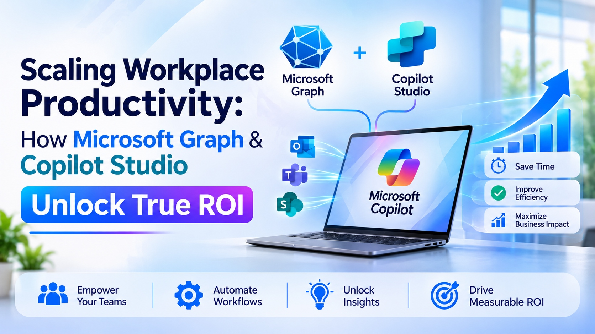

Scaling Workplace Productivity: How Microsoft Graph & Copilot Studio Unlock True ROI

Most organizations already own the data that could make their teams faster. The problem is that it sits across emails, meetings, documents, chats, and business apps. Microsoft Graph connects that data, and Copilot Studio turns it into assistants that act on it. Together they are one of the clearest paths to scaling workplace productivity with measurable ROI.
Why Productivity Stalls
Knowledge workers lose hours each week searching for files, summarizing threads, chasing approvals, and re-entering data. Individual AI tools help with single tasks, but they rarely understand the context of the business around them. Without that context, answers stay generic and adoption fades.
What Microsoft Graph Brings
Microsoft Graph is the unified API layer across Microsoft 365. It exposes people, calendars, mail, files, Teams conversations, and organizational relationships through one secure interface. For AI, this matters because relevant context is what separates a useful answer from a vague one.
Graph also respects existing permissions. A copilot grounded in Graph can only surface what a user is already allowed to see, which keeps data access consistent with current security policies.
What Copilot Studio Adds
Copilot Studio is the low-code environment for building and extending copilots. Teams can design custom agents, connect them to enterprise data and plugins, and publish them inside Teams, Microsoft 365, or external channels.
Many companies reach a point where out-of-the-box assistants are not enough and they need workflows tied to internal systems. That is where a structured approach to Enterprise Microsoft Copilot Integration helps connect Graph data, custom agents, and line-of-business systems into one governed solution.
Where ROI Shows Up
- Meetings: Automatic summaries, action items, and follow-ups reduce manual note-taking.
- Knowledge access: Employees find answers from policies and documents in seconds, not hours.
- HR and IT support: Agents resolve routine requests without opening tickets.
- Sales and service: Drafting, research, and CRM updates take less time per interaction.
- Operations: Approvals and routine processes run through automated flows.
How to Implement
- Pick high-friction workflows. Start where manual effort is highest and easiest to measure.
- Prepare your data. Clean up permissions, labels, and file structure in Microsoft 365.
- Build a focused pilot. Create one agent in Copilot Studio for a single team.
- Connect through Graph. Ground the agent in the content and context it needs.
- Train and gather feedback. Adoption depends on users trusting the results.
- Scale gradually. Expand to new departments once the pilot proves value.
Governance and Security
Productivity gains mean little if data is exposed. Review sensitivity labels, apply data loss prevention policies, limit connector access, and monitor agent activity. Clear ownership for each agent prevents sprawl as usage grows.
Measuring ROI
Set a baseline before launch, then track the same metrics after rollout.
- Hours saved per employee each week
- Ticket deflection rate for HR and IT requests
- Time to complete key processes
- Active users and repeat usage
- Licensing and build cost against measured savings
FAQs
What is the role of Microsoft Graph in Copilot?
Microsoft Graph supplies the organizational context, such as emails, files, meetings, and relationships, that lets Copilot give relevant, permission-aware answers.
What is Copilot Studio used for?
Copilot Studio is used to build, customize, and publish copilots and agents that connect to business data and automate tasks.
How quickly can a business see ROI?
Focused pilots on high-friction workflows often show measurable gains within the first few months, provided a baseline is set before launch.
Is it secure for enterprise data?
Graph-grounded copilots follow existing Microsoft 365 permissions. Strong governance, labeling, and monitoring keep that protection intact as usage scales.
Conclusion
Microsoft Graph provides the context and Copilot Studio provides the means to act on it. Start with one measurable workflow, govern it well, and expand from proven results. That is how workplace AI moves from an experiment to dependable ROI.